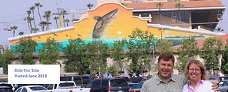

Ride the Tide at the Del Mar fairgrounds is visible from the 5 freeway so it’s not hard to find. Unfortunately, the time we could visit it turned out to be when the fair was going on which made it considerable harder to get to it. We did manage to find a drop-off spot at the fairgrounds and were able to get a picture from a distance but could not get as close as we would have liked.
This is the second wall at the fairgrounds and replaces the extinct California Gray Whales which was on the now demolished Gem and Minerals Building. It’s sunset appearance really fits well with its location.
Del Mar Fairgrounds
200’ W x 65’ H
Dedicated June 24, 2006
Excerpt from @wylandfoundation on Instagram
This week we will explore this writers favorite wall, number 94 titled Ride the Tide, in North County San Diego (where the climate is possibly the best in the world!) Ride the Tide can be seen when traveling north or south on the 5 freeway between Los Angeles and San Diego if you know when to look. And when you see it for the first time, you look for it every time! It becomes a habit. There is just something about the way the orange and yellow contrasts off the always blue skies that makes you happy.
Painted on the side of a massive building on the Del Mar Fairgrounds, millions of visitors every year see the mural while attending the horse races (with Bing Crosby being the founding member of the track) every summer and hundreds of events year round. The building is even titled, Wyland Hall!